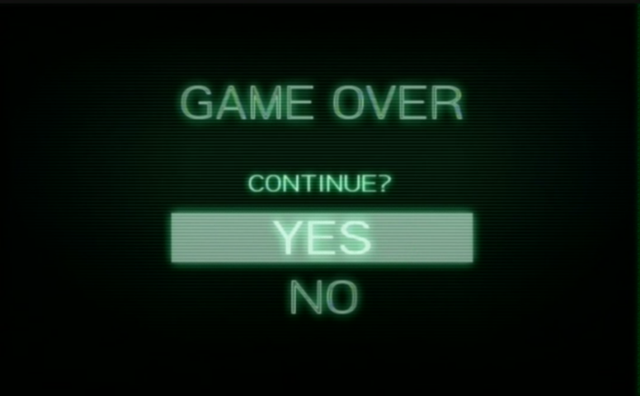
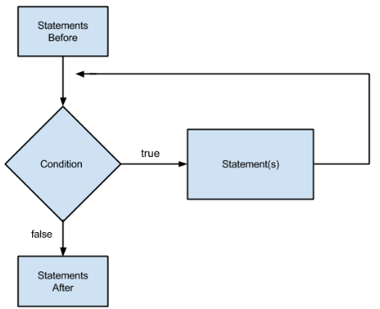
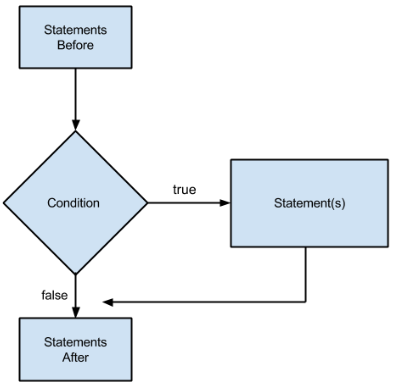

Describe what a while loop is… →
What is the while loop syntax? →
while condition:
print("execute this block of code")Starting Out with Python has a program that:
# get a salesperson's sales and commission rate.
sales = float(input('Enter the amount of sales: '))
rate = float(input('Enter the commission rate: '))
# calculate the commission
commission = sales * rate
# display the commission
print("the commission is $" + str(commission))Is it possible to change the code in the previous slide so that the program requests data and calculates commissions for 10 salespersons … WITHOUT USING A WHILE LOOP? →
Of course! It's tedious, but just write the code 10 times!
sales = float(input('Enter the amount of sales: '))
rate = float(input('Enter the commission rate: '))
commission = sales * rate
print("the commission is $" + str(commission))
sales = float(input('Enter the amount of sales: '))
rate = float(input('Enter the commission rate: '))
commission = sales * rate
print("the commission is $" + str(commission))
# and keep on going...Can you write a program to count from 1 to 5 by printing out each number on a new line WITHOUT USING A LOOP (we saw this previously) →
n, delta = 1, 1
print(n)
n = n + delta
print(n)
n = n + delta
print(n)
n = n + delta
print(n)
n = n + delta
print(n)
WITHOUT USING A WHILE LOOP, is it possible to write a program that: →
Continue? (Yes keeps on going)
> Yes
Continue? (Yes keeps on going)
> Yes
Continue? (Yes keeps on going)
> NoWe could try using consecutive nested if statements, but we don't know how deep the nesting could go.
answer = input('Continue? (Yes keeps on going) \n')
if answer == 'Yes':
answer = input('Continue? (Yes keeps on going) \n')
if answer == 'Yes':
answer = input('Continue? (Yes keeps on going) \n')
if answer == 'Yes':
answer = input('Continue? (Yes keeps on going) \n')def ask():
answer = input('Continue? (Yes keeps on going) \n')
if answer != 'Yes':
ask()
ask()Some formal definitions:
There are two broad categories of loops:
A while loop is a condition controlled loop.
A flow chart representing a while loop:

What happens if the condition is True?
The flow chart for an if statement looks pretty similar to a while loop. What do you think the difference would be from the diagram showing while loop logic? →

A template:
while condition: # the book calls this the while clause
statement
statementSome real code:
a = 100
while a > -1:
print(a)What does this output? →
100
100
100What do these snippets of code print out?→
while True:
print("I'm true!")while False:
print("I'm false!")I'm true!
I'm true!
I'm true!# nothing printed herewhile True:
print("I'm true!")while False:
print("I'm false!")We never even get into the body of the loop!
What does this print out? →
keep_on_going = True
while keep_on_going:
print("I'm going!)"I'm going
I'm going
I'm going
.
.
I'm goingLet's add one line. What does this print out? →
keep_on_going = True
while keep_on_going:
print("I'm going!")
keep_on_going = FalseI'm goingGoing through each iteration
keep_on_going = True
while keep_on_going:
print("I'm going!")
keep_on_going = FalseLoop ends after one iteration.
To change the outcome of your conditional:
First an easy one. Let's go back to the continue program that we discussed earlier:
Continue? (Yes keeps on going)
> Yes
Continue? (Yes keeps on going)
> Yes
Continue? (Yes keeps on going)
> Noanswer = input('Continue? (Yes keeps on going) \n')
while answer == 'Yes':
answer = input('Continue? (Yes keeps on going) \n')Notice that, like an if statement, variables declared outside of the body of the while loop can be accessed (and even changed) within the body of the while loop.
answer = 'Yes'
while answer == 'Yes':
answer = input('Continue? (Yes keeps on going) \n')(note that not all programs can fit this pattern)
Let's modify the previous program slightly so that it accepts either yes or yeah.
Continue? (Yes or Yeah will keep going)
Yeah
Continue? (Yes or Yeah will keep going)
Yes
Continue? (Yes or Yeah will keep going)
NopeTo implement this, modify the condition appropriately by adding or answer == 'Yeah'
answer = input('Continue? (Yes or Yeah will keep going) \n')
while answer == 'Yes' or answer == 'Yeah':
answer = input('Continue? (Yes or Yeah will keep going) \n')If you have some code that requires repetition, what questions should you ask?
Write a program that… →
There are a few ways to do this! What are some general strategies for solving this problem?→
n = 1
while n <= 99:
if n != 13:
print(n)
n = n + 2Using modulo to determine odds
n = 1
while n <= 99:
if n % 2 == 1 and n != 13:
print(n)
n = n + 1Write a program that will: →
Give me a number to add
> 10
Current total is 10
Give me a number to add
> 15
Current total is 25
Give me a number to add
> 5
Current total is 30
Give me a number to add
> total = 0
while True:
n = int(input("Give me a number to add\n> "))
total = total + n
print("Current total is " + str(total))Write a program that continually asks the user for numbers, and asks them if they'd like to keep going. In the end, it should output the average of all of the numbers entered→
I'll calculate the average for you!
Current total: 0
Numbers summed: 0
Please enter a number to add
> 10
Do you want to continue adding numbers (yes/no)?
> yes
Current total: 10
Numbers summed: 1
Please enter a number to add
> 12
Do you want to continue adding numbers (yes/no)?
> no
The average is 11.0Let's try keeping track of multiple variables:
total = 0
count = 0
answer = 'yes'
print("I'll calculate the average for you!")
while answer == 'yes':
print("Current total: " + str(total))
print("Numbers summed: " + str(count))
total = total + int(input("Please enter a number to add\n> "))
count = count + 1
answer = input("Do you want to continue adding numbers (yes/no)?\n> ")
print("The average is "+ str(total / count))We've used the following syntax to increment or decrement a variable
n = 0
n = n + 1
n = 100
n = n - 1Slightly tedious…
There's some syntactic sugar that makes doing this less verbose: use += or -=
n = 0
# adds one to n and binds the resulting value to n
n += 1
n = 100
# subtracts one to n and binds the resulting value to n
n -= 1This works for other operators too. What does this code print out? →
n = 2
n *= 2
n *= 2
print(n)
n = 64
n /= 2
n /= 2
print(n)8
16.0Also works with strings…. What does this code print out? →
s = "h"
s += "e"
s += "y"
s *= 3
print(s)heyheyheyContinually print out the next power of two, only if you say 'y' →
1
next power?
> y
2
next power?
> y
4
next power?
> nContinually ask for a number, print out the square, and ask to continue →
number
> 5
25
continue?
> y
number
> 2
4
continue?
> n